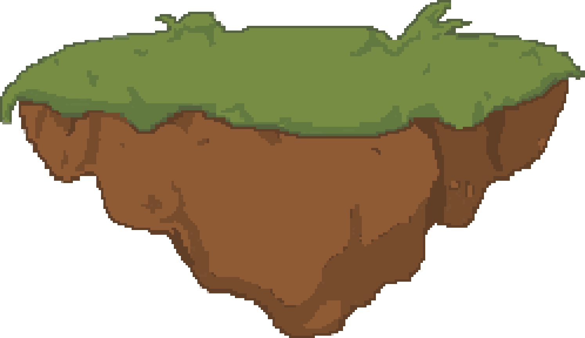

Sealbound
2D narrative-focused fantasy RPG
- Role
- Team
- Timeline
- Tools
Overview
Sealbound is a 2D pixel-art fantasy RPG centered around exploration, turn-based party combat, character relationships, and narrative progression. Players explore the village of Hearthwyn and surrounding dungeons, complete quests, build bonds with party members, and progress through a story centered around restoring ancient Seals that hold the world together.
My Role
I created the original concept and game design documentation for Sealbound, designing its core gameplay systems, progression, characters, and overall player experience. As Game Producer, I translated those designs into development priorities, delegated implementation across the team, and managed scope and milestones throughout production.
Alongside leading the project, I worked directly in Godot to implement character bonds, dialogue, NPC schedules, and the sleep/day-cycle system.
Process
Development began with a detailed game design document defining the world, gameplay systems, characters, combat, progression, and overall scope. I translated the design into actionable features and milestones, organized development through Jira sprints, and delegated work across programming, art, and level design based on team capacity and project priorities.
Features were developed across Git branches and regularly integrated into the main build for testing. As systems came together, I reviewed implementations, tested interactions between features, identified issues, and adjusted requirements or priorities where necessary.
What I Built
- Designed the game's core systems, including combat, character bonds, dialogue, quests, progression, NPC behavior, and day/night gameplay.
- Implemented and debugged the bond, dialogue, NPC scheduling, and sleep/day-cycle systems in Godot using GDScript.
- Defined system behavior and requirements for features delegated to other developers, including combat and supporting gameplay systems.
- Integrated and tested independently developed systems across gameplay, UI, narrative, and level design.
Challenges & Decisions
The original design was ambitious for a five-person team and the available development timeline, so maintaining a realistic scope became a major production priority. As development progressed, I reduced feature complexity, deferred lower-priority content, and reorganized work around the systems most important to the core experience.
I also adjusted designs after implementation and playtesting revealed where systems were too complex or where development effort would have had limited impact. Work was reprioritized based on team capacity, dependencies, and progress, allowing us to focus on delivering a cohesive playable build rather than spreading development across unfinished features.
Outcome
The final prototype brings together exploration, turn-based combat, character relationships, quests, NPC schedules, shops, progression, dialogue, and multiple dungeon areas into a cohesive playable experience.
The team transformed the original design document into a functional RPG vertical slice demonstrating Sealbound's core gameplay loop and narrative systems. The project gave me hands-on experience carrying a product from initial concept and system design through production planning, implementation, integration, testing, and delivery.